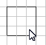
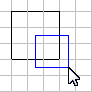
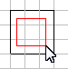
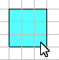
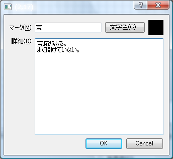
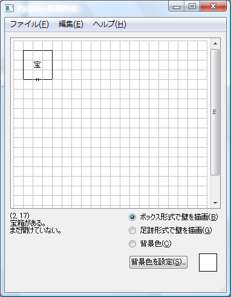
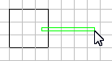
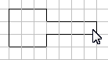

Pydunヘルプ
Pydunは3DダンジョンRPG用のマッピングツールです。
連絡先
不具合、ご要望などございましたら、以下までご連絡ください。
url: http://sourceforge.jp/projects/pydun/
email: hrwatahiki at gmail.com
インストール
インストール作業は不要です。pydun.exeをダブルクリックすればプログラムが起動できます。アンインストール時はフォルダーごと削除してください。(レジストリーは使用していません)
使い方
ドラッグすると壁を描画できます。
 | → |  |
右クリックからのドラッグで壁を削除できます。
|  | → |  |
背景色も同様です。
|  | → |  |
壁をクリックすると直接修正できます。
 | → |  |
四角の中央をクリックすると詳細を入力できます。
|  | → |  |
「ボックス形式」と「足跡形式」の違い。
| ボックス形式: |  | → |  |
| 足跡形式: |  | → |  |